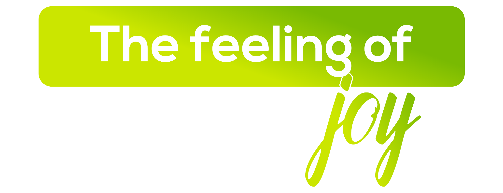

The Feeling of Joy
The City of Joy lives up to its name every single day — in its art, its literature, its biryani, and the boundless warmth of its people.
Kolkata is India's soul. The former capital of British India and birthplace of the Bengal Renaissance, this city has produced more Nobel laureates, writers, filmmakers, and artists than any other in the country. Beneath its colonial facades and crumbling mansions lies a city of extraordinary intellectual and creative depth.
AIESEC in Kolkata offers exchange participants an experience unlike any other in India — one of constant cultural surprise and emotional warmth. From sunrise at the Howrah Bridge to the poetry of a Park Street café, from Durga Puja's grand spectacle to the biryani of Arsalan — Kolkata embodies the feeling of joy in its purest, most generous form.

What makes Kolkata unforgettable.

The Howrah Bridge was built without a single nut or bolt — the entire 26,500-tonne structure is riveted, making it one of the great engineering achievements of mid-20th century Asia. Six lanes of traffic and a constant stream of pedestrians cross it every hour of the day. Watching the bridge from the river at dusk, as the light changes across the steel, is one of the most iconic views in India.

For five days each October, every neighbourhood in Kolkata constructs a pandal — a temporary structure housing a handcrafted clay Durga — in a citywide competition of theme, scale, and artistry. The best pandals draw hundreds of thousands of visitors in a single night; the crowd, the music, and the light transform the city entirely. Durga Puja in Kolkata is the largest public arts festival in the world by any reasonable measure.

Kolkata's biryani has a whole boiled potato inside the pot — a variation introduced by the Nawab of Awadh, who adapted the Lucknowi style to Bengal using potatoes in exile. The result is lighter and more aromatic than Hyderabadi or Lucknowi versions. The biryani at Arsalan, Shiraz, or one of the old Muslim restaurants in Park Circus is a defining Kolkata experience.

The Indian Coffee House at 15 Bankim Chatterjee Street — run by a workers' cooperative since 1958 — is the single most important intellectual café in India. Tagore, Ray, Bose, and generations of Bengal's writers and scientists had the conversations that mattered here. The marble tables, the old waiters in white uniforms, and the noise of argument make it irreplaceable.

The Victoria Memorial was completed in 1921 as the British Empire's statement of permanence in Bengal — built of Makrana marble from Rajasthan, it now serves as the finest museum of the colonial period in India. The surrounding 64-acre garden is among Kolkata's most pleasant green spaces. The irony of this imperial monument becoming beloved by the city that expelled the empire gives it a particular Kolkata quality.

Kolkata produced Rabindranath Tagore, Satyajit Ray, Amartya Sen, and Jhumpa Lahiri — a density of global cultural achievement concentrated in a single city that is almost without parallel. The city's literary culture is not nostalgia; it is ongoing, in the bookshops of College Street, the annual book fair, and the debate culture of its universities. Being here feels like being inside a tradition that has not finished.

Kolkata's trams have run since 1902 and are the only functioning tram network remaining in India. The older rolling stock — wooden seats, manually operated bells, conductors who know every stop — creates a mode of transport that is genuinely distinctive. Taking the tram from Esplanade to Kalighat on a quieter morning is one of the most atmospheric urban journeys in Asia.

Hogg's Market — universally called New Market — opened in 1874 as the primary retail destination of colonial Calcutta. Everything is sold here: fresh produce, confectionery, cut flowers, handbags, and sari cloth, in a rambling Victorian market building whose layout no one fully understands. The New Market experience — slightly chaotic, entirely genuine — is the commercial heart of old Kolkata.
Everything you need to know before arriving in Kolkata.
Options include hostels, host families, and shared flats — ideally within a 4 km radius of your workplace. Your local committee will help arrange everything.
Kolkata is one of India's most affordable major cities. Expect ₹10,000–12,000 per month for meals, transport, and daily expenses. The city offers remarkable quality of life at modest cost.
Kolkata has India's only metro outside Delhi, plus extensive bus, tram, and ferry networks. The metro is fast and affordable. Yellow Ambassador taxis and Ola/Uber complete the picture.
You'll need a valid Indian visa for your exchange. Your local committee will provide a detailed visa guide and assist with the application process.
Kolkata has excellent healthcare including SSKM, Apollo Gleneagles, and Fortis. Your local committee provides comprehensive health and safety guidelines and 24/7 support.
Bengali is the local language and a source of enormous cultural pride. Hindi and English are widely understood. Learning even "Nomoshkar" and "Dhonnobad" (thank you) will delight every local you meet.
Jio and Airtel offer strong 4G coverage across Kolkata. Pick up a prepaid SIM at Netaji Subhash Chandra Bose International Airport or any mobile store with your passport.
Remove shoes at temples and religious sites. During Durga Puja, dress smartly as it's a major social occasion. Bengalis are deeply proud of their culture — showing genuine curiosity and respect opens every door.
Two ways to experience Kolkata through AIESEC.

A 6–8 week volunteering exchange for ages 18–30 focused on sustainable development goals. Create real impact in Kolkata's communities while immersing yourself in local culture.

A professional internship to accelerate your career development. Work with Kolkata's industries and gain real-world professional skills in a global environment.
Your dedicated team in Kolkata, ready to make your exchange unforgettable.
Reach out to our national team for any questions about exchanges in Kolkata.


